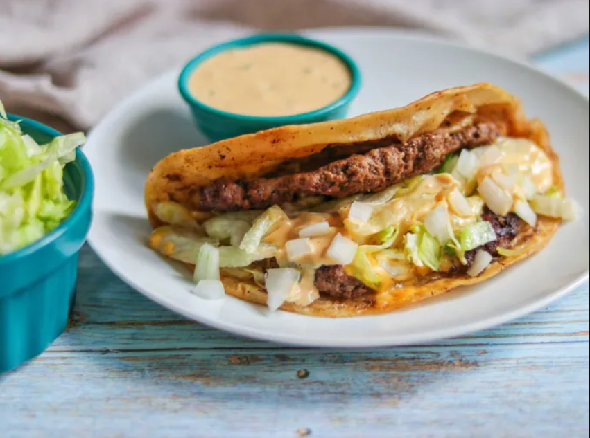

Home
Smash Burger Taco

Description
If you're a smash burger fan, try serving them as a taco with cheese and all the fixings for a different take!
Ingredients
- 1/4 cup mayonnaise
- 1 tablespoon ketchup
- 1 teaspoon mustard
- 1 tablespoon relish
- 1/2 teaspoon hot sauce
- 1 lb ground round
- 1 teaspoon Kosher salt
- 1/2 teaspoon freshly ground black pepper
- 4 (6-inch) flour tortillas
- 2 slices American cheese, cut in half lengthwise
- 1 cup shredded iceberg lettuce
- 1/4 cup diced onion
Steps
- Combine mayo, ketchup, mustard, relish, and hot sauce in a small bowl; set sauce aside.
- Heat a griddle over medium-high heat.
- Divide beef into 4 loose portions and place on the hot griddle. Season with salt and pepper and cook for 2 minutes. Place a tortilla over each portion and firmly press to flatten the beef into a thin layer that reaches the edges of the tortilla.
- Cook until tortilla is golden-brown, 2 to 3 more minutes. Flip each patty over and top with cheese. When cheese is melted and the tortilla is golden brown and crisp, top with lettuce and onions. Drizzle with sauce, remove from the griddle and fold in half like a taco. Serve immediately.